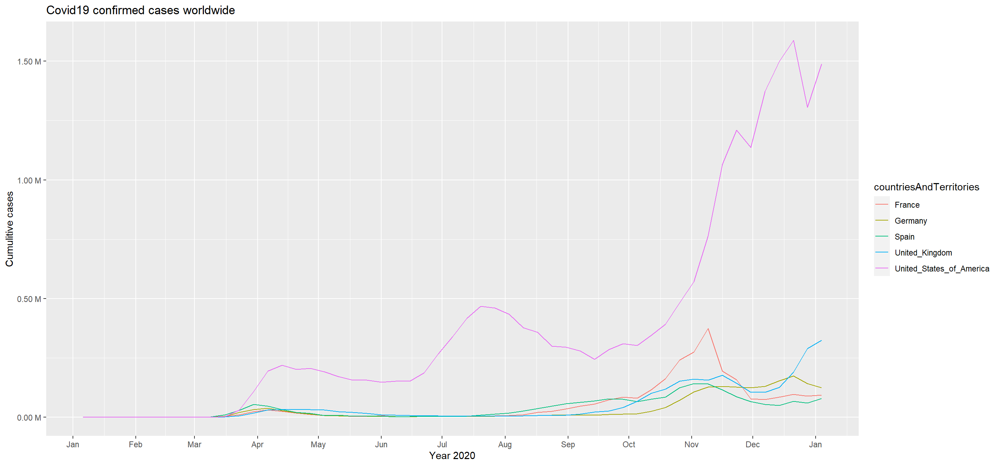
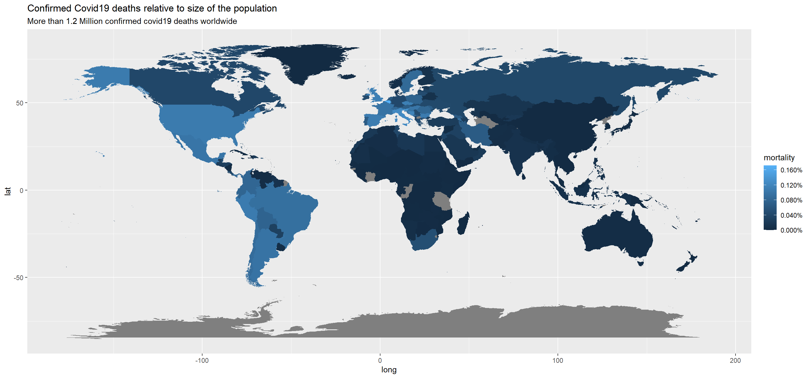

Journal (reproducible report)
Akshaya Katiganere Anandappa
2021-01-07
Last compiled: 2021-01-08
1 Intro to the tidyverse
1.1 Challenge 1
# 1.0 Load libraries ----
library(tidyverse)
library(readxl)
# 2.0 Importing Files ----
bikes_tbl <- read_excel(path = "00_data/01_bike_sales/01_raw_data/bikes.xlsx")
orderlines_tbl <- read_excel("00_data/01_bike_sales/01_raw_data/orderlines.xlsx")
bikeshops_tbl <- read_excel("00_data/01_bike_sales/01_raw_data/bikeshops.xlsx")
# 3.0 Examining Data ----
#orderlines_tbl
#glimpse(orderlines_tbl)
# 4.0 Joining Data ----
bike_orderlines_joined_tbl <- orderlines_tbl %>%
left_join(bikes_tbl, by = c("product.id" = "bike.id")) %>%
left_join(bikeshops_tbl, by = c("customer.id" = "bikeshop.id"))
# 5.0 Wrangling Data ----
challenge_bike_orderlines_wrangled_tbl <- bike_orderlines_joined_tbl %>%
separate(col = location,
into = c("city", "state"),
sep = ", ") %>%
mutate(total.price = price * quantity) %>%
select(-...1, -gender) %>%
select(-ends_with(".id")) %>%
bind_cols(bike_orderlines_joined_tbl %>% select(order.id)) %>%
select(order.id, contains("order"), contains("model"), contains("category"),
price, quantity, total.price,state,city,
everything()) %>%
rename(bikeshop = name) %>%
set_names(names(.) %>% str_replace_all("\\.", "_"))
# 6.0 Business Insights ----
# 6.1 Sales by state ----
# Step 1 - Manipulate
library(lubridate)
sales_by_state_tbl <- challenge_bike_orderlines_wrangled_tbl %>%
select(state, total_price) %>%
group_by(state) %>%
summarize(sales = sum(total_price))%>%
mutate(sales_text = scales::dollar(sales, big.mark = ".",
decimal.mark = ",",
prefix = "",
suffix = " €"))
# Step 2 - Visualize
sales_by_state_tbl %>%
ggplot(aes(x = state, y = sales)) +
geom_col(fill = "#2DC6D6") + # Use geom_col for a bar plot
geom_label(aes(label = sales_text)) + # Adding labels to the bars
geom_smooth(method = "lm", se = FALSE) + # Adding a trendline
theme(axis.text.x = element_text(angle = 45, hjust = 1))+
scale_y_continuous(labels = scales::dollar_format(big.mark = ".",
decimal.mark = ",",
prefix = "",
suffix = " €")) +
labs(
title = "Revenue by state",
subtitle = "comparison",
x = "", # Override defaults for x and y
y = "Revenue"
)
# 6.2 Sales by Year and state ----
# Step 1 - Manipulate
sales_by_year_state_tbl <- challenge_bike_orderlines_wrangled_tbl %>%
select(order_date, total_price, state) %>%
mutate(year = year(order_date)) %>%
group_by(year, state) %>%
summarise(sales = sum(total_price)) %>%
ungroup() %>%
mutate(sales_text = scales::dollar(sales, big.mark = ".",
decimal.mark = ",",
prefix = "",
suffix = " €"))
# Step 2 - Visualize
sales_by_year_state_tbl %>%
# Set up x, y, fill
ggplot(aes(x = year, y = sales, fill = state)) +
# Geometries
geom_col() + # Run up to here to get a stacked bar plot
# Facet
facet_wrap(~ state) +
# Formatting
scale_y_continuous(labels = scales::dollar_format(big.mark = ".",
decimal.mark = ",",
prefix = "",
suffix = " €")) +
labs(
title = "Revenue by year and state",
subtitle = "A comparison",
fill = "Main category" # Changes the legend name
) 
2 Data Acquisition
2.1 Challenge 1 - to get data via api
library(glue)
library(httr)
library(jsonlite)
resp <- GET("http://api.open-notify.org/iss-pass.json", query = list(lat =53.5511, lon = 9.9937))
resp## Response [http://api.open-notify.org/iss-pass.json?lat=53.5511&lon=9.9937]
## Date: 2021-01-08 11:02
## Status: 200
## Content-Type: application/json
## Size: 522 B
## {
## "message": "success",
## "request": {
## "altitude": 100,
## "datetime": 1610102506,
## "latitude": 53.5511,
## "longitude": 9.9937,
## "passes": 5
## },
## "response": [
## ...data = fromJSON(rawToChar(resp$content))
data## $message
## [1] "success"
##
## $request
## $request$altitude
## [1] 100
##
## $request$datetime
## [1] 1610102506
##
## $request$latitude
## [1] 53.5511
##
## $request$longitude
## [1] 9.9937
##
## $request$passes
## [1] 5
##
##
## $response
## duration risetime
## 1 201 1610139029
## 2 576 1610144578
## 3 645 1610150318
## 4 653 1610156110
## 5 633 16101619112.2 Challenge 2 - competitor web scraping
library(tidyverse) # Main Package - Loads dplyr, purrr, etc.
library(rvest) # HTML Hacking & Web Scraping
library(xopen) # Quickly opening URLs
library(jsonlite) # converts JSON files to R objects
library(glue) # concatenate strings
library(stringi) # character string/text processing
library (dplyr)
url_home = "https://www.rosebikes.de/fahrräder/mtb"
html_home <- read_html(url_home)
type_name <- html_home %>%
html_nodes(css = ".catalog-category-bikes__title-text")%>%
html_text()
type_price <- html_home %>%
html_nodes(css = ".catalog-category-bikes__price-title")%>%
html_text()
name_list<-c()
price_list<-c()
#type_name_list= str_split(type_name," ")
for (i in type_name){
elem<-str_extract(i,".+(?=\\n)")
name_list<-c(name_list,elem)
}
for (i in type_price){
elem<-str_extract(i,"(?<= ).+(?=\\S)")
price_list<-c(price_list,elem)
}
#bike_table<- enframe(name =
#df <- ldply (price_list, data.frame)
bike_price_table<-data.frame(name_list,price_list)
bike_price_table## name_list price_list
## 1 GROUND CONTROL 1.699,00
## 2 ROOT MILLER 1.999,00
## 3 PIKES PEAK 3.099,00
## 4 THE BRUCE <NA>
## 5 COUNT SOLO <NA>
## 6 PSYCHO PATH 1.849,00
## 7 THRILL HILL 2.599,00
## 8 THRILL HILL TRAIL 2.899,00
## 9 SOUL FIRE 2.149,00 #a<-enframe(c(name=name_list,values=price_list))3 Data Wrangling
3.1 Patent data
# Tidyverse
library(tidyverse)
library(vroom)
# Data Table
library(data.table)
# Counter
library(tictoc)# 2.0 DATA IMPORT ----
library(vroom)
col_types_1 <- list(
id = col_character(),
date = col_date("%Y-%m-%d"),
num_claims = col_double()
)
patent_tbl <- vroom(
file = "02_data_wrangling/patent.tsv",
delim = "\t",
col_types = col_types_1,
na = c("", "NA", "NULL")
)# 2.0 DATA IMPORT ----
library(vroom)
col_types_2 <- list(
patent_id = col_character(),
assignee_id = col_character()
)
patent_assignee_tbl <- vroom(
file = "02_data_wrangling/patent_assignee.tsv",
delim = "\t",
col_types = col_types_2,
na = c("", "NA", "NULL")
)# 2.0 DATA IMPORT ----
library(vroom)
col_types_3 <- list(
id = col_character(),
type = col_double(),
organization = col_character()
)
assignee_tbl <- vroom(
file = "02_data_wrangling/assignee.tsv",
delim = "\t",
col_types = col_types_3,
na = c("", "NA", "NULL")
)# 2.0 DATA IMPORT ----
library(vroom)
col_types_4 <- list(
patent_id = col_character(),
mainclass_id = col_character(),
sequence = col_double()
)
uspc_tbl <- vroom(
file = "02_data_wrangling/uspc.tsv",
delim = "\t",
col_types = col_types_4,
na = c("", "NA", "NULL")
)# 3.1 Patent Data ----
class(patent_tbl)## [1] "tbl_df" "tbl" "data.frame"setDT(patent_tbl)
class(patent_tbl)## [1] "data.table" "data.frame"patent_tbl %>% glimpse()## Rows: 327,014
## Columns: 3
## $ id <chr> "8621662", "8621663", "8621664", "8621665", "8621666", "...
## $ date <date> 2014-01-07, 2014-01-07, 2014-01-07, 2014-01-07, 2014-01...
## $ num_claims <dbl> 11, 6, 10, 18, 7, 9, 21, 19, 8, 18, 7, 15, 15, 15, 18, 7...setDT(patent_assignee_tbl)
patent_assignee_tbl %>% glimpse()## Rows: 315,910
## Columns: 2
## $ patent_id <chr> "8709412", "8636251", "8899346", "8700141", "8724986", ...
## $ assignee_id <chr> "org_MPhnVOTFsXybN0auC647", "org_v7VisXnmZZEEUMeHhW6y",...setDT(assignee_tbl)
assignee_tbl %>% glimpse()## Rows: 47,011
## Columns: 3
## $ id <chr> "org_004j997jM9yEdS7z4ReD", "org_005hVGA5JMOZsS0xOhGa"...
## $ type <dbl> 3, 3, 2, 2, 3, 3, 2, 3, 2, 3, 2, 2, 2, 3, 2, 3, 3, 2, ...
## $ organization <chr> "University of Basel", "Zetkama Spólka Akcyjna", "Mira...setDT(uspc_tbl)
uspc_tbl %>% glimpse()## Rows: 815,743
## Columns: 3
## $ patent_id <chr> "8829273", "8623780", "8904894", "8794165", "8773920",...
## $ mainclass_id <chr> "435", "502", "368", "111", "365", "128", "709", "707"...
## $ sequence <dbl> 7, 2, 0, 1, 0, 4, 2, 1, 2, 2, 10, 1, 2, 4, 1, 1, 9, 0,...# 4.0 DATA WRANGLING ----
# 4.1 Joining / Merging Data ----
tic()
patent_tbl_1 <- merge(x = patent_assignee_tbl, y = assignee_tbl,
by.x = "assignee_id", by.y = "id",
all.x = TRUE,
all.y = TRUE)
toc()## 0.55 sec elapsedpatent_tbl_1 %>% glimpse()## Rows: 315,910
## Columns: 4
## $ assignee_id <chr> "org_004j997jM9yEdS7z4ReD", "org_004j997jM9yEdS7z4ReD"...
## $ patent_id <chr> "8728438", "8921361", "8857791", "8845559", "8815936",...
## $ type <dbl> 3, 3, 3, 2, 3, 3, 3, 3, 2, 2, 2, 2, 3, 2, 2, 2, 2, 2, ...
## $ organization <chr> "University of Basel", "University of Basel", "Zetkama...tic()
patent_tbl_2 <- merge(x = patent_tbl_1, y = patent_tbl,
by.x = "patent_id", by.y = "id",
all.x = TRUE,
all.y = TRUE)
toc()## 0.88 sec elapsedpatent_tbl_2 %>% glimpse()## Rows: 338,687
## Columns: 6
## $ patent_id <chr> "8621662", "8621663", "8621664", "8621665", "8621666",...
## $ assignee_id <chr> "org_aTMUEAbUvQuADfnSfudQ", "org_FfZ2sonhh4RvKY8vYp2B"...
## $ type <dbl> 2, 2, NA, NA, 2, NA, 2, 2, 3, NA, NA, NA, 2, NA, 3, 3,...
## $ organization <chr> "Hamilton Sundstrand Space Systems International, Inc....
## $ date <date> 2014-01-07, 2014-01-07, 2014-01-07, 2014-01-07, 2014-...
## $ num_claims <dbl> 11, 6, 10, 18, 7, 9, 21, 19, 8, 18, 7, 15, 15, 15, 18,...tic()
patent_tbl_3 <- merge(x = patent_tbl_2, y = uspc_tbl,
by = "patent_id",
all.x = TRUE,
all.y = TRUE)
toc()## 1.01 sec elapsedpatent_tbl_3 %>% glimpse()## Rows: 926,702
## Columns: 8
## $ patent_id <chr> "8621662", "8621663", "8621663", "8621664", "8621664",...
## $ assignee_id <chr> "org_aTMUEAbUvQuADfnSfudQ", "org_FfZ2sonhh4RvKY8vYp2B"...
## $ type <dbl> 2, 2, 2, NA, NA, NA, 2, 2, NA, 2, 2, 2, 2, 2, 2, 2, 2,...
## $ organization <chr> "Hamilton Sundstrand Space Systems International, Inc....
## $ date <date> 2014-01-07, 2014-01-07, 2014-01-07, 2014-01-07, 2014-...
## $ num_claims <dbl> 11, 6, 6, 10, 10, 18, 7, 7, 9, 21, 21, 21, 21, 21, 19,...
## $ mainclass_id <chr> "2", "2", "351", "2", "2", "2", "2", "2", "2", "2", "2...
## $ sequence <dbl> 0, 0, 1, 0, 1, 0, 0, 1, 0, 0, 1, 3, 2, 4, 0, 2, 1, 3, ...# Preparing the Data Table
setkey(patent_tbl_1, "type")
key(patent_tbl_1)## [1] "type"?setorder()
setorderv(patent_tbl_1, c("type", "organization"))# Preparing the Data Table
setkey(patent_tbl_2, "type")
key(patent_tbl_2)## [1] "type"?setorder()
setorderv(patent_tbl_2, c("type", "organization"))# Preparing the Data Table
setkey(patent_tbl_3, "type")
key(patent_tbl_3)## [1] "type"?setorder()
setorderv(patent_tbl_3, c("type", "organization"))# 5.1 Highest patents in US
patent_tbl_1_typ <- patent_tbl_1[ (type == '2'),]
tic()
patent_US_Highest <- patent_tbl_1_typ[!is.na(organization), .N, by = organization]
toc()## 0.01 sec elapsedsetkey(patent_US_Highest, "organization")
key(patent_US_Highest)## [1] "organization"?setorder(-N, organization)
setorderv(patent_US_Highest, c("N", "organization"), order = -1)as_tibble(patent_US_Highest, .rows = 10)## # A tibble: 10 x 2
## organization N
## <chr> <int>
## 1 International Business Machines Corporation 7547
## 2 Microsoft Corporation 3165
## 3 Google Inc. 2668
## 4 QUALCOMM Incorporated 2597
## 5 Apple Inc. 2201
## 6 General Electric Company 1873
## 7 Hewlett-Packard Development Company, L.P. 1638
## 8 AT&T INTELLECTUAL PROPERTY I, L.P. 1625
## 9 Intel Corporation 1616
## 10 GM Global Technology Operations LLC 1533patent_tbl_2_typ <- patent_tbl_2[ !(type == 'na') & (type == '2') ]
patent_tbl_2_typ_month <- patent_tbl_2_typ %>%
select(organization, num_claims, date) %>%
mutate(month = month(date))
patent_tbl_2_typ_January <- patent_tbl_2_typ_month[ (month == '1') ]
setkey(patent_tbl_2_typ_January, "organization")
key(patent_tbl_2_typ_January)## [1] "organization"?setorder(-num_claims, organization)
setorderv(patent_tbl_2_typ_January, c("num_claims", "organization"), order = -1)as_tibble(patent_tbl_2_typ_January, .rows = 10)## # A tibble: 10 x 4
## organization num_claims date month
## <chr> <dbl> <date> <int>
## 1 BridgeHealth Medical, Inc. 131 2014-01-21 1
## 2 ACCELERON PHARMA INC. 129 2014-01-14 1
## 3 Covidien LP 125 2014-01-28 1
## 4 Hematologics, Inc. 124 2014-01-14 1
## 5 Signal Perfection, Ltd. 122 2014-01-07 1
## 6 Verizon Business Global LLC 115 2014-01-07 1
## 7 University of Virginia Patent Foundation 113 2014-01-07 1
## 8 BuyMetrics, Inc. 112 2014-01-21 1
## 9 Massachusetts Institute of Technology 106 2014-01-21 1
## 10 Array BioPharma Inc. 104 2014-01-07 1patent_tbl_3_typ <- patent_tbl_3[!(type == 'na')]
patent_tbl_3_typ <- patent_tbl_3_typ[!(mainclass_id == 'na')]
setkey(patent_tbl_3_typ, "organization")
key(patent_tbl_3_typ)## [1] "organization"?setorder(-num_claims, organization, -mainclass_id)
setorderv(patent_tbl_3_typ, c("num_claims", "organization", "mainclass_id"), order = -1)as_tibble(patent_tbl_3_typ, .rows = 10)## # A tibble: 10 x 8
## patent_id assignee_id type organization date num_claims mainclass_id
## <chr> <chr> <dbl> <chr> <date> <dbl> <chr>
## 1 8688181 org_ONzMjd~ 2 Internation~ 2014-04-01 521 505
## 2 8688181 org_ONzMjd~ 2 Internation~ 2014-04-01 521 505
## 3 8688181 org_ONzMjd~ 2 Internation~ 2014-04-01 521 505
## 4 8676991 org_adUSPY~ 2 QUALCOMM In~ 2014-03-18 381 725
## 5 8676991 org_adUSPY~ 2 QUALCOMM In~ 2014-03-18 381 725
## 6 8676991 org_adUSPY~ 2 QUALCOMM In~ 2014-03-18 381 725
## 7 RE44963 org_rVU8cQ~ 2 Diamond Tec~ 2014-06-24 352 703
## 8 RE44963 org_rVU8cQ~ 2 Diamond Tec~ 2014-06-24 352 703
## 9 RE44963 org_rVU8cQ~ 2 Diamond Tec~ 2014-06-24 352 702
## 10 RE44963 org_rVU8cQ~ 2 Diamond Tec~ 2014-06-24 352 356
## # ... with 1 more variable: sequence <dbl>4 Data Visualization
4.1 Challenge 1: Time course of the cumulative Covid-19 cases

4.2 Challenge 2: Mortality Rate on world map
world <- map_data("world")
covid_by_mortality_tbl <- covid_data_tbl %>%
mutate(across(countriesAndTerritories, str_replace_all, "_", " ")) %>%
mutate(countriesAndTerritories = case_when(
countriesAndTerritories == "United Kingdom" ~ "UK",
countriesAndTerritories == "United States of America" ~ "USA",
countriesAndTerritories == "Czechia" ~ "Czech Republic",
TRUE ~ countriesAndTerritories
))%>%
group_by(countriesAndTerritories, popData2019, deaths_weekly) %>%
summarise(total_pop = max(popData2019))%>%
summarise(total_death = sum(deaths_weekly))%>%
summarise(mortality = (total_death)/(popData2019))class(covid_by_mortality_tbl)## [1] "tbl_df" "tbl" "data.frame"setDT(covid_by_mortality_tbl)
class(covid_by_mortality_tbl)## [1] "data.table" "data.frame"covid_by_mortality_tbl %>% glimpse()## Rows: 214
## Columns: 2
## $ countriesAndTerritories <chr> "Afghanistan", "Albania", "Algeria", "Andor...
## $ mortality <dbl> 5.175891e-05, 3.297901e-04, 4.986870e-05, 8...setDT(world)
world %>% glimpse()## Rows: 99,338
## Columns: 6
## $ long <dbl> -69.89912, -69.89571, -69.94219, -70.00415, -70.06612, -7...
## $ lat <dbl> 12.45200, 12.42300, 12.43853, 12.50049, 12.54697, 12.5970...
## $ group <dbl> 1, 1, 1, 1, 1, 1, 1, 1, 1, 1, 2, 2, 2, 2, 2, 2, 2, 2, 2, ...
## $ order <int> 1, 2, 3, 4, 5, 6, 7, 8, 9, 10, 12, 13, 14, 15, 16, 17, 18...
## $ region <chr> "Aruba", "Aruba", "Aruba", "Aruba", "Aruba", "Aruba", "Ar...
## $ subregion <chr> NA, NA, NA, NA, NA, NA, NA, NA, NA, NA, NA, NA, NA, NA, N...tic()
covid_by_map_tbl <- merge(x = world, y = covid_by_mortality_tbl,
by.x = "region", by.y = "countriesAndTerritories",
all.x = TRUE,
all.y = FALSE)
toc()## 0.03 sec elapsedcovid_by_map_tbl%>% glimpse()## Rows: 99,338
## Columns: 7
## $ region <chr> "Afghanistan", "Afghanistan", "Afghanistan", "Afghanistan...
## $ long <dbl> 74.89131, 74.84023, 74.76738, 74.73896, 74.72666, 74.6689...
## $ lat <dbl> 37.23164, 37.22505, 37.24917, 37.28564, 37.29072, 37.2667...
## $ group <dbl> 2, 2, 2, 2, 2, 2, 2, 2, 2, 2, 2, 2, 2, 2, 2, 2, 2, 2, 2, ...
## $ order <int> 12, 13, 14, 15, 16, 17, 18, 19, 20, 21, 22, 23, 24, 25, 2...
## $ subregion <chr> NA, NA, NA, NA, NA, NA, NA, NA, NA, NA, NA, NA, NA, NA, N...
## $ mortality <dbl> 5.175891e-05, 5.175891e-05, 5.175891e-05, 5.175891e-05, 5...setkey(covid_by_map_tbl, "region")
key(covid_by_map_tbl)## [1] "region"?setorder(region, -mortality, long, lat)
setorderv(covid_by_map_tbl, c("mortality", "region", "long", "lat"), order = -1)library(ggplot2)
library(scales)
covid_by_map_tbl%>%
ggplot() +
geom_map(aes(x = long, y = lat, map_id = region, fill = mortality),map = world) +
scale_fill_continuous(labels = scales::percent)+
labs(title = "Confirmed Covid19 deaths relative to size of the population ",
subtitle = "More than 1.2 Million confirmed covid19 deaths worldwide") 